A kávé története
Gondoltad volna, hogy valószínűleg a kávét eleinte nem itták, hanem ették? Az ugandaiak például, ha
távoli útra indultak, szárított babszemeket rágcsáltak, mivel úgy hitték, így különleges erőre
kapnak, az abesszínok pedig egyszerűen azért rágták a kávét, mert szerették.
De milyen messzire is nyúlik vissza a kávé története?
Több legenda is van
A 17. században bukkant fel a krónikákban a leginkább elterjedt legenda miszerint egy etióp juhász
Kaldi megfigyelte, hogy a kecskék egész éjszaka ébren maradnak, ha napközben egy bokor vörös bogyóit
eszegetik. Tapasztalatairól beszámolt a közelben lakó szerzeteseknek, akik a bogyóból keserű italt
főztek, és a hosszú imádságok alatt ezzel tartották magukat ébren. De arról is tudomásunk van, hogy
1000 körül Avicenna már gyógyszerként használta a kávét. Egy titokzatos, fekete, keserű, élénkítő
hatású ital a sokkal régebbi arab mondákban is szerepel.
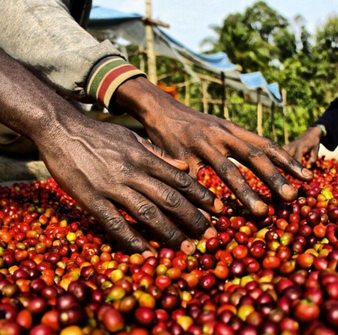
Az ősi krónikák szerint egyszer egy Omar nevű gyógyító képességekkel rendelkező embert száműztek egy
sivatagi barlangba a mai Jemen területén. Omárnak nem volt túl sok ennivalója, de szerencsére talált
egy bokrot, amin furcsa bogyók teremtek. Omár nagyon éhes volt, ezért mit volt mit tenni,
megpróbálta megenni a bogyókat, de azok szörnyen keserűek voltak. Emberünk nem hagyta magát, és
tűzön megforgatta a furcsa termést, hátha az javít az ízén valamicskét. De így meg ehetetlenre
keményedtek a bogyók. Mivel Omar most már tényleg komolyan éhezett, ezért úgy döntött, hogy megőrli
azokat a fránya bogyókat és főzetet készít belőlük.
Miután megitta a főzetet, csodálatos módon napokig elkerülte a fáradság és úgy érezte, hogy még
sosem volt ennyi energiája. A varázsital híre hamar elterjedt a környező településeken, Omart
hazahívták és élete végéig szent emberként tisztelték. Hát így segítette hozzá az emberiséget a
kávéhoz Omar, a gyógyító.
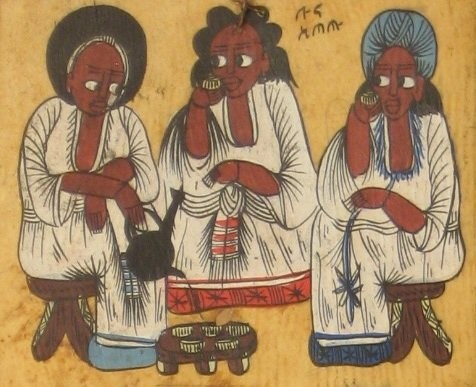
Miért is "kávé" a neve?
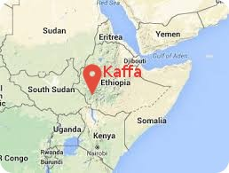
A szó eredete visszavezethető a ”qahwe”,”kahwe” arab szavakra, amiket az arab kereskedők
terjesztettek el Európa szerte. Míg más nyelvek a latin coffea szót vették át és használták saját
kiejtésük szerint, addig nálunk az oszmán birodalom térhódítása révén a kahwe szó terjedt el.
Különböző források megegyeznek abban, hogy a kávécserje egy etióp tartományból, Kaffából származik.
Innen terjedt el Jemenbe, Perzsiába, Arábiába és Egyiptomba.
Az áruló(hős) csempész
Az arab országok a 17. századig tudták megőrizni a kávécserjék titkát. Kávéval persze addig is
élénken
kereskedtek, azonban az áruba bocsájtott babokat forralással vagy pörköléssel sterilizálták, hogy ne
lehessen őket más országokban elültetni, és így megmaradjon az ősi kávétermesztő országok
egyeduralma a
piacon. Még azt is tudjuk, hogy 1670-ben egy Baba Budan nevű férfi a mellkasához ragasztva
csempészte ki
azt a hét kávészemet, amiből aztán az indiai kávétermesztés megszületett. Baba Budan sírja ma is
látogatható Indiában, a róla elnevezett Baba Budan dombságban.
Hogyan jutott Perzsiából Arábiába a kávé?
Egy arab szerző, Sehabeddin Ben, úgy tudja, hogy a kávéivás szokását az adeni mufti, Gemaleddin
honosította meg a XV. század közepén Boldog Arábiában. Gemaleddin Perzsiában látta néhány
honfitársát kávézni, és amikor hazatérve gyengélkedni kezdett, maga is kipróbálta az italt. Nemcsak
meggyógyult, hanem megtapasztalta a kávé serkentő, áloműző hatását is. Fogyasztani kezdte, és
ajánlotta, hogy a dervisek kávéval élénkítsék magukat az imával töltött éjszakákon.
Szintén történelmi tények szerint az 1600-as évek végén a holland gyarmatokon már kávét
termesztettek, onnan került át Java szigetére.
Néhány éven belül a holland gyarmatok váltak a kávé fő szállítójává. Európába először velencei
kereskedők hozták 1615-ben. (Kiegészítő információ, hogy nagyjából ebben az időszakban több, mai
szemmel fontos forró ital is megjelent Európában. A forró csokit pl. a spanyolok hozták Amerikából
1528-ban. A teát pedig 1610-ben árulták először gyógy-limonádé formában.) Az első európai kávéház
Velencében nyílt 1683-ban.
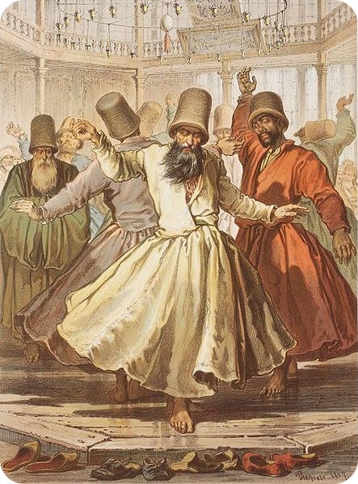
A kávé hamarosan egész Adenben elterjedt, sőt eljutott Mekkába, Medinába, Kairóba, Damaszkuszba,
Konstantinápolyba is. De nemcsak az áhitatos mohamedánok fogyasztották. Az 1500-as évek derekán
Konstantinápolyban divatba jöttek a kávéházak. Kedvelt szórakozóhelyekké váltak, ahol a férfiak
sakkot játszottak, pletykáltak, élvezték az éneket, táncot és zenét. (Egyszóval jó kis helyek voltak
ezek.) A kávéház vált a társadalmi és gazdasági élet színterévé, ahol kényelmes környezetben,
hastáncos nőkkel körülvéve születtek meg a fontos döntések, amiben egy csésze kávé áráért bárki
részt vehetett. És még mi zajlott ott? Hát persze, hogy a politika. Egy darabig ez keresztbe is tett
a kávé terjedésének, ugyanis a kávéházakat hamarosan politikai aktivisták is felfedezték, ami miatt
az elkövetkező néhány évtizedben a kávé fogyasztását és a kávéházakat is többször betiltották. A
vallásos mohamedánoknak egyre kevésbé tetszett az új szokás, és a muftival betiltatták a kávét
mondván, hogy a pörkölt kávé szénféleség, és Mohamed törvénye nem engedi a főzet fogyasztását. A
kávéházakat bezárták ugyan, de az emberek otthon továbbra is itták a kávét. Végül a hatóság nem
törődött a zárt ajtók mögött kávézókkal, a kávéházak lassan újra kinyitottak, az új mufti
kijelentette, hogy a kávénak semmi köze a szénhez, így aztán nemsokára több kávéház üzemelt, mint
valaha, és a nagyvezér adót szedett a tulajdonosoktól.
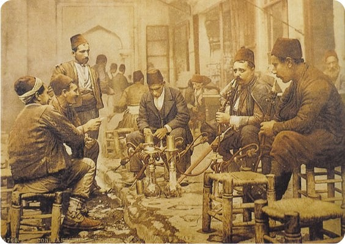
A XVI-XVII. században a Balkán és Észak-Afrika felé terjeszkedő török birodalom magával vitte a
kávézás szokását. Velencében is hamarosan megjelent a kávé. Francesco Morosini, a Velencei
Köztársaság követe, 1582-es konstantinápolyi jelentésében megemlíti, hogy Keleten számos olyan üzlet
van, ahol az emberek naponta többször találkoznak egymással egy forró, sötét ital mellett.
Az első európai kávéházak, kizárólag férfiaknak
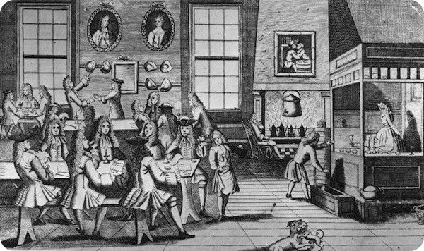
Az első párizsi kávéházat 1672-ben nyitotta meg egy örmény kereskedő, de nem aratott sikert. Később
más örmény és perzsa vállalkozók is kísérleteztek – eredménytelenül. Valószínűleg nem ismerték a
francia szokásokat. Nemsokára ugyanis franciák rendeztek be elegáns, tágas helyiségeket, ahol kávét,
teát, csokoládét, egyéb üdítőket kínáltak, s ide már szívesen eljöttek az írók és a társasági
emberek. Ötven év múlva több mint háromszáz kávézó volt Párizsban, ám Dubois bíboros a régenskorban
(1715-23) betiltotta a kávéházi csevegéseket, és később – 1789-ig – szigorú rendőri ellenőrzésnek
vetették alá a kávéházakat.
Az első londoni kávéház néhány évvel megelőzte a párizsit. Az angol törvénykönyvek 1660-ban említik
először a kávét; a kávéárusokra gallononként négy penny adót róttak ki. 1675-ben Károly király
betiltotta a kávéházakat, amelyeket felforgató eszmék terjesztésével vádoltak, de a tilalmat néhány
napon belül visszavonta.
Az európai piacokra többnyire Alexandria és Szmirna kikötőiből érkezett a kávé. Az ital növekvő
népszerűsége és a nagy kikötői adók miatt azonban megpróbálták a kávét a gyarmatokon is
meghonosítani. A hollandok az Indonéz-szigeteken, a franciák Martinique-on és az Antillákon, az
angolok, spanyolok és portugálok Ázsia és Amerika trópusi vidékein létesítettek ültetvényeket. A két
leggyakoribb faj, a Coffea arabica és a Coffea robusta, Afrikából került a világ különböző tájaira.
A leghíresebb kávéház, a “Caffe Florian a Piazza San Marco” 1720-ban nyitotta meg kapuit és a mai
napig változatlanul nyitva tart. Igazi időutazás ott egy kávét elfogyasztani. Ha valaki arra jár, ne
mulassza el.
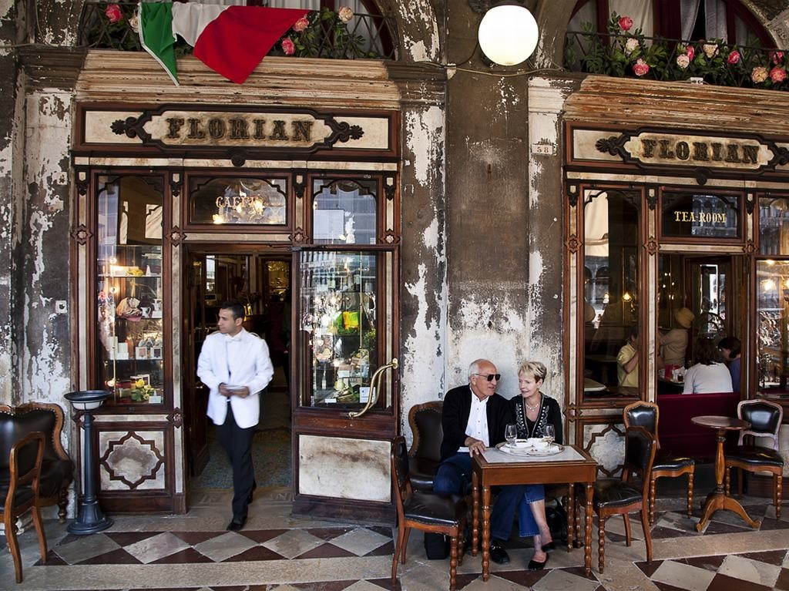
Az első írásos említése a kávénak az amerikai kontinensen
Észak-Amerikában az 1668-as évre datálódik. Nem sokkal később, kávéházak létesültek New York-ban,
Bostonban, Philadelphia-ban és más városokban. A New York Stock Exchange és a Bank of New York
szintén kávéházakból indult. Így gyakorlatilag maga a Wall Street is.
1720-ban egy francia haditengerészeti tiszt, Gabriel Mathieu de Clieu, a szabadsága alatt
Martinique-ra utazott, azzal a szándékkal, hogy egy kávécserjét vigyen magával.
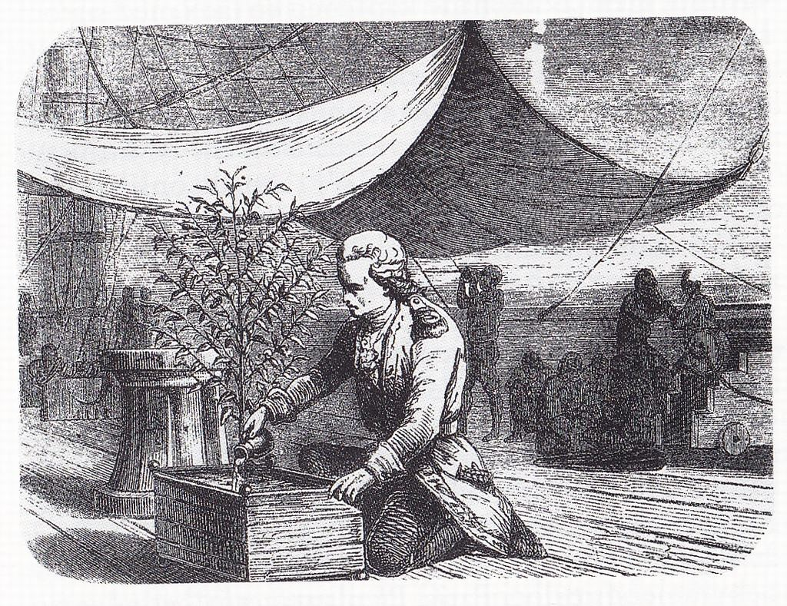
A növényt egy vitrinbe zárta a fedélzeten, hogy melegen tartsa, és nehogy megsérüljön a sós víztől.
Az út eseménydúsnak bizonyult. Előbb tunéziai kalózok támadták meg őket, később heves viharokba
kerültek, majd a kapitány féltékeny tiszttársa szabotálta a küldetést, amiben meg is sérült a növény
a hajónapló szerint: leszakadt egy ága. A hajó vízkészletei is vészesen megcsappantak, végül a
kapitány saját ivóvizét áldozta a növény öntözésére. A hajó a viszontagságok ellenére megérkezett, a
cserjét elültették, nőtt, és megsokszorozódott, és 1726-ban az első aratásra készen állt.
Feljegyezték, hogy 1777-ben már 18-19 millió kávé cserje állt Martinique-on. Közép-és Dél-Amerikában
ma is az egyik fő exportcikk. (1730-ban került Jamaica-ra, ahol ma az egyik leghíresebb és
legdrágább kávét termesztik a világon, a Blue Mountain-t.)
Bécsben 1683-ban jelent meg a kávé, közvetlenül azután, hogy a törökök ostrom alá vették a várost.
Nos megfordult itt egy érdekes lengyel katonatiszt, Franz Georg Kolschitzky. Ő korábban
Törökországban élt, valószínűleg a -törökökön kívül – az egyetlen ember volt akkor és ott a
hadszíntéren, aki tudta, hogyan kell használni a kávét és egyáltalán mi az. Nos, ez a rátermett
fiatalember lenyúlta a menekülő török hadsereg kávétartalékait, és ezekre a készletekre alapozva a
háború után megnyitotta Bécs első kávéházát. Hatalmas sikert aratott. Sőt a bécsi kávé kifejezés is
a nevéhez fűződik, ugyanis ő adott tejet és édesítőket először a kávéhoz, majd azt süteménnyel
szolgálta fel.
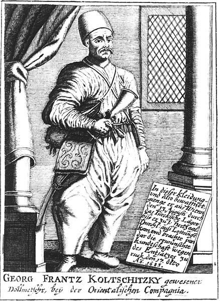
A kávézók népszerűsége robbanásszerűen nőtt. Olyannyira, hogy a 17. és a 18. században Londonban
több kávézó volt, mint ma. Pedig annak idején nem voltak olyan kulturáltak a körülmények, egészen
máshogy festett a korabeli kávézó. Egy igazi kávéház zsúfolt volt, büdös, zajos, harcias, füstös,
ünnepelt, és dugig volt elítéltekkel.
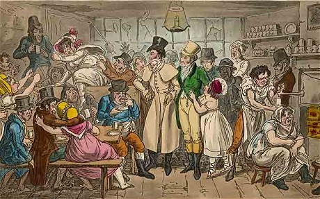
(Kiegészítés: ebben az időben kezdett elterjedni a borravaló adása. Akik jobb szolgáltatást, vagy
ülőhelyet szerettek volna kapni, egy kis pénzért igyekeztek ezeket a kiváltságokat biztosítani
maguknak.)
A kávéházak befolyásos helyekké váltak, széles körben jártak oda művészek, értelmiségiek,
kereskedők, bankárok, és fórumot kínált a különféle politikai tevékenységeknek. Angliában “penny
egyetem”-ként emlegették. Azt mondták, hogy egy kávéházban egy ember több hasznos tudást szívhat
magába, mint könyvekből (és egy penny-be került egy kávé).
A kávé mint ellenség
Eddig jó párszor próbálták meg betiltani a kávéfogyasztást a történelem során:
1. Először még Mekkában gondolták úgy 1511-ben, hogy a kávé összefüggésbe hozható a lázadó
gondolkodással és ezért meg kell tőle szabadulni.
2. Nem sokkal később olasz papok igyekeztek betiltani, mert a sátán italának gondolták. Szerencsére
VII Kelemen pápa ezzel egyáltalán nem értett egyet. Állítólag egyetlen csésze kávé meggyőzte, hogy
ez a remek ital nem lehet a sátán műve. A kávé annyira ízlett neki, hogy azonnal áldását adta rá, és
besorolta a keresztény italok közé, szavait idézve: „A kávét meg kellene keresztelni, mert igazi
keresztény ital.”
3. Még ugyanebben a században, 1623-ban IV Murád oszmán szultán már keményen büntette országában a
kávéfogyasztást.
4. 1674-ben Angliában a nők nyújtottak be petíciót a kávé fogyasztás ellen. Arra panaszkodtak, hogy
férjeik soha nem tartózkodnak otthon, mert folyton kávéházakban múlatják az időt.
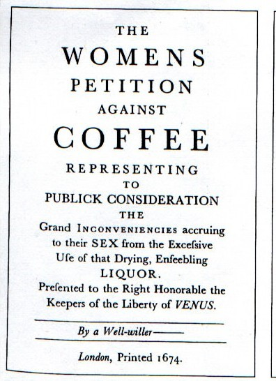
5. A kávénak a 18. század sem hozott nyugtot, ugyanis 1746-ban a svédek még a kávéskészletek használatát is törvényen kívül helyezték, biztos, ami biztos alapon.
6. 1732-ben Németországban arra hivatkozva, hogy nőknél sterilitást okoz, próbálták betiltani a kávét.
7. Nagy Frigyes porosz király úgy gondolta, hogy a kávézás rosszat tesz a nemzeti söriparnak, és így minden eszközzel meg kell akadályozni a terjedését. Ő konkrétan a zöld kávé importját tiltotta meg 1775-ben. A dolog odáig fajult, hogy hivatásos “kávé kiszagolókat” bérelt fel, akik az utcákat járva próbálták kiszagolni, hogy hol pörkölnek zugkávét. Itt is közfelháborodás, majd a kiáltvány visszavonása lett a következmény.